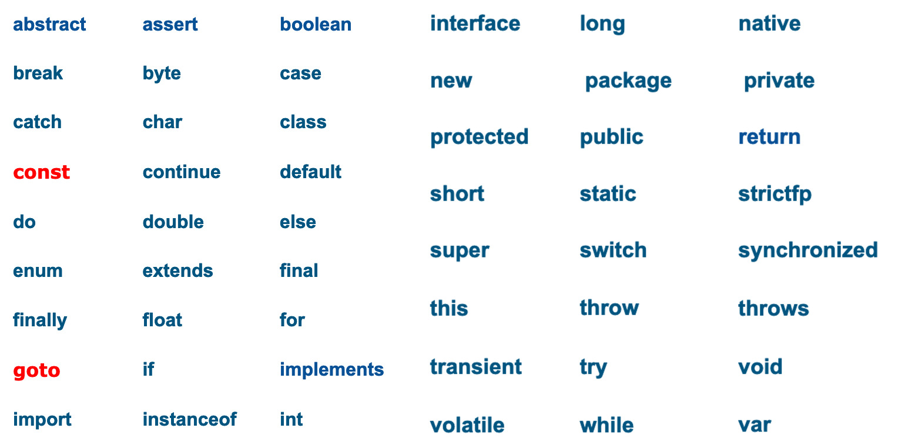
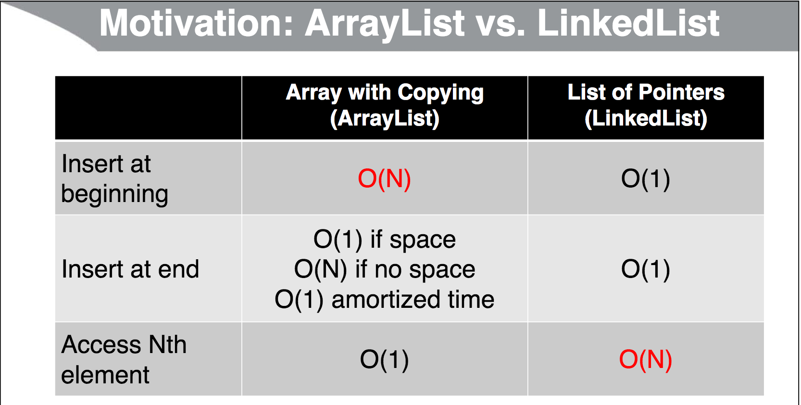
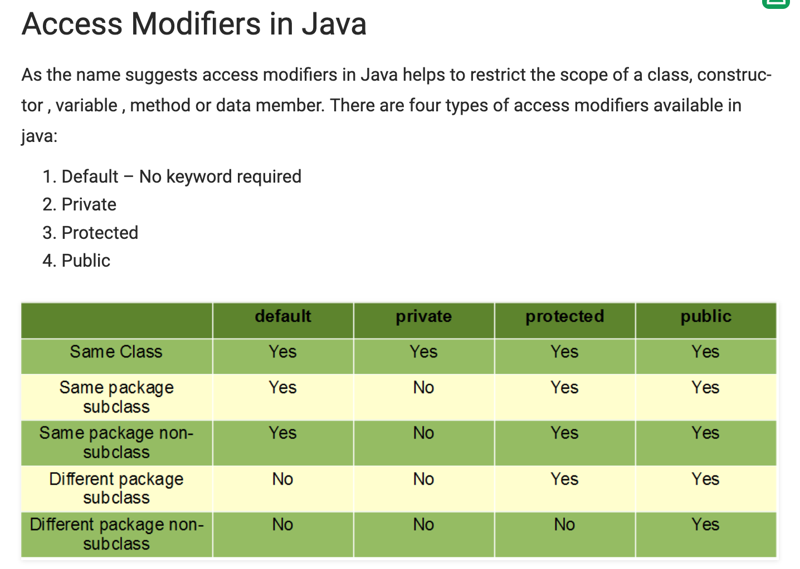
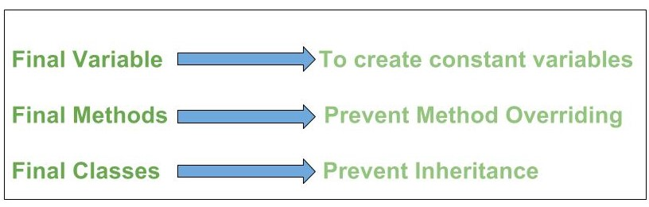
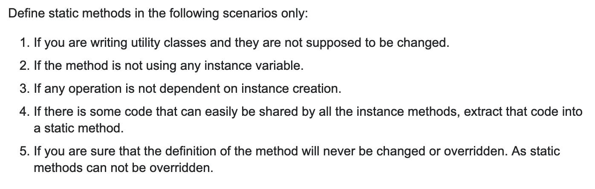

Most data scientists avoid the Java Virtual Machine (JVM) like the plague. The features that make developers and data engineers so productive as a team, such as access modifiers and powerful IDEs, feel slow, old, and cumbersome to individuals interacting with data and prototyping new algorithms. However, the JVM and its supporting system matured to an indominatble force since its inception. It is ubiquitous in the most popular open-source projects; espectially in Big Data and distributed systems, such as Hadoop and Kafka. The only competitors to Java in this domain are supporting languages that compile to the JVM, such as Scala, Groovy, and Kotlin. Because of these factors the JVM culture sets precedence in a manner similar to Linux.
Data scientists need to understand the perspective of other engineers and the tools they use in order to progress in their careers, and knowing Java is the backbone to this. Another advantage to knowing java is that it exposes users to many fundamental computer science concepts. This guide will provide the basics for getting familiar with Java, fast, as well as displaying different programming abstractions, such as testing, team integration and design patterns, not readily available to most consulting data scientists. It will also provide support for a multitude of JVM languages that, while not necessary to know Java, will make life much easier.
Culture and Precendence
Because Java is such an old and popular language it has quite alot of culture and history (some might say baggage) built around it. This culture also creates precedence which might not be enforced by a compiler, but is so sacrosanct that anyone breaking the rules will quickly become a target. Most of this is created around how Java found its niche: as a portable language for large organizations of development teams to deliver code. For individual programmers much of Java functionality will not seem necessary, and even tiresome. It grew-up before the age serverless technology or microservices. But all of that changes once it is used by teams who have to work together, and, in turn, deliver components for a large, monolith system.
Some general knowledge and basic conventions that help beginners:
- modern Java begins with version Java 1.8, but is called Java8
- the Java platform includes packages of functions, such as
java,javax,org.omg; and the most fundamental:java.lang - package namespaces are the url of the company, backwards, such as
com.firmname.classify.functions - directory structures are implemented from the package name, so there can be alot of empty folders depending on how many suffixes you used
- the directory path is for
srcthe other is fortest - each Java class must be in an individual file, so you may have to have many files open in order to find something
- dependency management is performed by maven (traditional xml-based) or gradle (groovy-based)
Naming conventions:
- Class and Inteface names should be nouns, in mixed case, such as
class ImageSprite - Methods should be verbs and Variables should be nouns, both in mixed camel case, such as
getBackground()andfloat myWidth, respectivly - constants should be all upper-case, such as
static final int MIN_WIDTH = 4
Basics
Configuation and envrironment
Proper development in Java demands an Integrated Development Environment IDE. JetBrain’s Intellij IDEA is one of the best. However, some time must be taken to become acquainted with it.
Gotchas:
- Intellij creates a project folder within its own directory for each project you create. You must delete a project in both places.
- Always Import a project, instead of just Opening one.
- ???
To get started with Intellij, Import a new project. Then move to the tests directory, open a file, and run tests by clicking on the green arrows that appear on the left side.
This tutorial will be created using Two Sigma’s BeakerX JVM kernel for the Jupyter notebook. So we will focus on package-level code snippets before looking at a larger project. BeakerX allows you to reference work among cells by creating assigning the cell to a package just as you do within a project.
The following code cell creates a class BeakerTest, the class is then instantated, in the next cell.
package test.beaker;
import java.util.Date;
import java.text.SimpleDateFormat;
public class BeakerTest {
private Date _date;
private SimpleDateFormat sdf = new SimpleDateFormat("yyyy-MM-dd'T'HH:mmZ");
public BeakerTest() {
_date = new Date();
}
public String getDateTxt() {
return "Today:" + sdf.format(_date);
}
public String getDateUpperCaseTxt() {
return getDateTxt().toUpperCase();
}
}
test.beaker.BeakerTest
package test.beaker;
BeakerTest bt = new BeakerTest();
return bt.getDateTxt();
Today:2019-06-27T13:20+0000
Because BeakerX is designed for data science, graphs can be created by importing their Plot package.
import java.util.List;
import java.util.ArrayList;
import com.twosigma.beakerx.chart.xychart.Plot;
import com.twosigma.beakerx.chart.xychart.plotitem.*;
import com.twosigma.beakerx.chart.Color;
Plot p = new Plot();
p.setTitle("this is a Java plot");
Bars b = new Bars();
List<Number> yList = new ArrayList<Number>();
yList.add(2);
yList.add(5);
yList.add(4);
yList.add(8);
b.setY(yList);
b.setColor(Color.blue);
b.setWidth(0.5);
p.add(b);
return p;
package test.beaker;
interface DateGetter {
public String getDateTxt();
}
test.beaker.DateGetter
package test.beaker;
public class DG2 extends BeakerTest implements DateGetter {
}
test.beaker.DG2
Core packages
The following are core packages that do not require dependency tracking, such as maven.
- java.lang — basic language functionality and fundamental types
- java.util — collection data structure classes
- java.io — file operations
- java.math — multiprecision arithmetics
- java.nio — the Non-blocking I/O framework for Java
- java.net — networking operations, sockets, DNS lookups, …
- java.security — key generation, encryption and decryption
- java.sql — Java Database Connectivity (JDBC) to access databases
- java.awt — basic hierarchy of packages for native GUI components
- java.text — Provides classes and interfaces for handling text, dates, numbers, and messages in a manner independent of natural languages.
- java.rmi — Provides the RMI package.
- java.time — The main API for dates, times, instants, and durations.
- java.beans — The java.beans package contains classes and interfaces related to JavaBeans components.
- java.Applet — This package provides classes and methods to create and communicate with the applets.
The java.lang package is available without the use of an import statement.
Popular libraries
standard
- lang
- util
- io, nio
- math
- net
productivity
- apache commons
- math
- cli
- csv
- io
- guava, google commons
- google-gson
testing
- junit
- mockito
logging
- log4j
- slf4j
application development
- http
- h2
- jhipster
- spring
- hibernate orm
Syntax
Basic operations
double result = 2.3 + 4.5;
System.out.println(result);
String result1 = "Hello, " + "World";
System.out.println(result1);
6.8
Hello, World
null
Basic arrays
int[] nums = {2, 5, 4, 9};
System.out.println(nums[0]);
String[] strings = {"alsdj", "asldfj", "owiure"};
System.out.println(strings.length);
2
3
null
Typical main within class
class Programm {
public static void main(String[] args){
Programm programm = new Programm();
programm.start();
}
public void start(){
String[] test = {"This", "is", "a", "test"};
for(String t:test){
System.out.println(t);
}
}
}
com.twosigma.beaker.javash.bkr9f024aeb.Programm
Example using strings and conditionals
package test.beaker;
import java.lang.String;
public class Input1 {
public String mIfElse(String[] args) {
String testr;
if(args.length > 3){
String sArgs = String.join(",", args);
testr = "Your argument is: " + sArgs;
for(String arg: args){
System.out.println(arg);
}
} else {
testr = "Not many arguments";
for(int i=0; i<args.length; i++){
System.out.println(args[i]);
}
}
return testr;
}
}
test.beaker.Input1
package test.beaker;
Input1 x = new Input1();
String[] test = {"This", "is", "a", "test"};
System.out.println(x.mIfElse( test ));
String[] y = {"a","test"};
System.out.println( x.mIfElse(y) );
This
is
a
test
Your argument is: This,is,a,test
a
test
Not many arguments
null
Array actions
package test.beaker;
import java.lang.String;
public class ArraySum {
public void sum() {
double[] numbers = { 1.1, 2.2, 3.3 };
System.out.println("[v1] Sum1 of {1.1,2.2,3.3}=" + arraySum1(numbers));
System.out.println("[v2] Sum2 of {1.1,2.2,3.3}=" + arraySum2(numbers));
System.out.println("[v3] Sum3 of {1.1,2.2,3.3}=" + arraySum3(numbers));
}
public static double arraySum1(double[] nums) {
double sum = 0;
for(double num: nums) {
sum = sum + num; // Or sum += num
}
return(sum);
}
public static double arraySum2(double[] nums) {
double sum = 0;
for(int i=0; i<nums.length; i++) {
sum = sum + nums[i];
}
return(sum);
}
public static double arraySum3(double[] nums) {
double sum = 0;
int i=0;
while(i<nums.length) {
sum = sum + nums[i];
i++; // Or i = i + 1, or i += 1
}
return(sum);
}
}
test.beaker.ArraySum
package test.beaker;
ArraySum x = new ArraySum();
x.sum();
[v1] Sum1 of {1.1,2.2,3.3}=6.6
[v2] Sum2 of {1.1,2.2,3.3}=6.6
[v3] Sum3 of {1.1,2.2,3.3}=6.6
null
Declare and allocate arrays
package test.beaker;
public class Allocate{
public static void run(){
// one-step
int[] val1 = {1,2,3};
// two-step
int[] val2 = new int[3];
val2[0] = 1;
val2[1] = 2;
val2[2] = 3;
System.out.println(val1[0]);
System.out.println(val2[0]);
}
}
test.beaker.Allocate
package test.beaker;
Allocate x = new Allocate();
x.run();
1
1
null
Typical class
package test.beaker;
public class Circle {
private double radius;
public Circle(double radius) {
this.radius = radius;
}
public double getRadius() {
return(radius);
}
public void setRadius(double radius) {
this.radius = radius;
}
public double getArea() {
return(Math.PI * radius * radius);
}
}
test.beaker.Circle
Allocating arrays
package test.beaker;
public class CircleArray {
public static void main(String[] args) {
// Do something with arrays
}
/** Builds an array of Circles and returns the array. After allocating space for the Circles,
* it loops down, builds a Circle, and puts it into the appropriate place in the array.
* This is the correct approach.
*/
public static Circle[] makeCircles1(int numCircles) {
Circle[] circles = new Circle[numCircles]; // Allocate space
for(int i=0; i<circles.length; i++) {
circles[i] = new Circle(Math.random() * 10); // Put circles in the array
}
return(circles);
}
/** Attempts to build an array of Circles. Crashes with NullPointerException since after
* first line there are no Circle objects, just null pointers. So, trying to call setRadius
* on null crashes.
*/
public static Circle[] makeCircles2(int numCircles) {
Circle[] circles = new Circle[numCircles];
for(int i=0; i<circles.length; i++) {
circles[i].setRadius(Math.random() * 10); // Crashes with NullPointerException
}
return(circles);
}
/** Attempts to build an array of Circles. Fails because it never puts any Circles
* into the array. To put something into an array, you must have the index.
*
* The funny @SuppressWarnings entry below is something we have not yet
* covered. It just tells Eclipse not to warn that the variable c in the loop
* below is never used, since I already know that the code is wrong. It is a bad habit
* to leave code in your projects that has warnings, because then you get in the habit
* of ignoring the warnings, and the vast majority of the warnings are useful.
* If you are deliberately doing something that will result in a warning from Eclipse,
* suppress the warnings using
* http://help.eclipse.org/mars/index.jsp?topic=%2Forg.eclipse.jdt.doc.user%2Ftasks%2Ftask-suppress_warnings.htm
* and, preferably document why you are doing things a knowingly bad way.
*/
@SuppressWarnings("unused")
public static Circle[] makeCircles3(int numCircles) {
Circle[] circles = new Circle[numCircles];
for(Circle c: circles) {
c = new Circle(Math.random() * 10);; // Fails to store c in array
}
return(circles); // Array still contains only null pointers
}
}
test.beaker.CircleArray
package test.beaker;
CircleArray x = new CircleArray();
Circle[] y = x.makeCircles1(3);
System.out.println(y[0].getRadius() );
3.716013423654272
null
Static methods (math operations) these are essentially global functions
double rand = Math.random();
System.out.println(rand);
System.out.println(Math.pow(2,3));
System.out.println(Math.exp(2.30));
System.out.println(Math.log(10));
0.03994823989553764
8.0
9.974182454814718
2.302585092994046
null
Use of static import
import static java.lang.Math.*;
...
double d1 = cos(...); // Instead of Math.cos(...)
double d2 = sin(...); // Instead of Math.sin(...)
double d3 = random(); // Instead of Math.random()
Keywords
The following is a table of all keywords. Some noteworthy points regarding Java keywords:
constandgotoare resevered words but not usedtrue,falseandnullare literals, not keywords- since Java 8, the
defaultkeyword is also used to declare default methods in interfaces - since Java 10, the word
varis used to declare local variables (local variables type inference). For backward compatibility, you can still usevaras variable names. Sovaris a reserved word, not keyword - all keywords are in lower-case
- all keywords are reserved words but all reserved words are not keywords. Specifically, Java has two reserved words (goto and const) which are not keywords
- Reserved words are those that cannot be used as identifiers (class names, method names, varaible names etc). For example,
class,public,int,etcare reserved words - Keywords are those words which convey some special meaning to the compiler. For example, the kewyord
breakindicates some form of branching,classis used to specify a class definition
- Reserved words are those that cannot be used as identifiers (class names, method names, varaible names etc). For example,

Access modifiers: private, protected, public
Flow control: break, case, continue, default, do, else, for, if, instanceof, return, switch, while
Package control: import, package
Primitive types: boolean, byte, char, double, float, int, long, short
Error handling: assert, catch, finally, throw, throws, try
Enumeration: enum
Others: super, this, void
Unused (reserved): const, goto
Class, method, variable modifiers:
abstract, class, default, extends, final,
implements, interface, native, new,
static, strictfp, synchronized, transient,
var, volatile
Annotations
Standard
- @Override
- @Deprecated
- @SuppressWarnings
Spring
- ???
- ???
Generics
Intermediate Java developers should also to be able to define classes or methods that support generics.
Using <TypeVariable>
- If you put variables in angle brackets in the class or method definition, it tells Java that uses of those variables refer to types, not to values
- It is conventional to use short names in upper case, such as T, R (input type, result type) or T1, T2 (type1, type2), or E (element type)
Using Generic Types in Existing Classes
Find a data structure that accepts Object(s)
- ArrayList, LinkedList, HashMap, HashSet, Stack
Declare the data structure with the type(s) in angle brackets immediately after type name
List<String> names = new ArrayList<>();Map<String,Person> employees = new HashMap<>();
Insert objects of the appropriate type
names.add("Some String");employees.put(person.getEmployeeId(), person);
No typecast required on removal
String firstName = names.get(0);Person p1 = employees.get("a1234");
<> diamond operator
Autoboxing
- So you cannot actually store int, double, and other primitives. You cannot declare the List to take primitives (e.g.,
List<int>is illegal) - These data structures can only store wrapper types (Integer, Double, etc.)

import java.util.*;
public class RandomList {
public static void main(String[] args) {
List<String> entries = new ArrayList<>();
double d;
while((d = Math.random()) > 0.1) {
entries.add("Value: " + d);
}
for(String entry: entries) {System.out.println(entry);}
}
}
com.twosigma.beaker.javash.bkr9f024aeb.RandomList
/*
This says that the best method takes a List of T’s and returns a T.
The '<T>' at the beginning means T is not a real type, but a type
that Java will figure out from the method call
*/
`public static <T> T methodname(List<T> entries, ...) { ... }`
package generics.beaker;
import java.util.Random;
public class RandomUtils {
private static Random r = new Random();
/** Return a random int from 0 to range-1. So, randomInt(4)
* returns any of 0, 1, 2, or 3.
*/
public static int randomInt(int range) {
return(r.nextInt(range));
}
/** Return a random index of an array. */
public static int randomIndex(Object[] array) {
return(randomInt(array.length));
}
/** Return a random element from an array.
* Uses generics, so no typecast is required
* for the return value.
*/
public static <T> T randomElement(T[] array) {
return(array[randomIndex(array)]);
}
/* <T>
• In rest of method, T refers to a type.
• Java will figure out what type T is by looking at the parameters of the method call.
• Even if there is an existing class actually called T, it is irrelevant here.
*/
/* T and T[]
This says that the method takes in an array of T’s and returns a T.
For example, if you pass in an array of Strings, you get out a String;
if you pass in an array of Employees, you get out an Employee.
No typecasts required in any of the cases.
*/
}
generics.beaker.RandomUtils
package generics.beaker;
import java.util.Random;
import java.util.*;
RandomUtils r = new RandomUtils();
String[] arr = new String[3];
arr[0] = "one";
arr[1] = "two";
arr[2] = "three";
System.out.println( r.randomElement(arr) );
String[] names = { "Joe", "John", "Jane" };
String name = r.randomElement(names);
System.out.println(name);
Integer[] nums = { 1, 2, 3, 4 };
int num = r.randomElement(nums);
System.out.println(num);
one
John
3
null
package generics.beaker;
import java.util.*;
public class Cprint {
public static <T> T mPrint(List<T> lArg ){
for(T item: lArg){
System.out.println(item);
}
//return(lArg.get(0)); <-- wierd, seems like it should have to return something
}
static <T> void mDisplay(List<T> lArg){
for(T item: lArg){
System.out.println(item);
}
}
}
generics.beaker.Cprint
// WTF???
package generics.beaker;
import java.util.*;
Cprint inst = new Cprint();
List<String> lArg = new ArrayList<>();
lArg.add("one");
lArg.add("two");
lArg.add("three");
inst.mPrint(lArg);
System.out.println("");
inst.mDisplay(lArg);
cannot find symbol
symbol: class Cprint
location: class generics.beaker.BeakerWrapperClass1261714175Id08595fc76c1a46ebbef0e11cd0c086e8
Cprint inst = new Cprint()
^ ^
cannot find symbol
symbol: class Cprint
location: class generics.beaker.BeakerWrapperClass1261714175Id08595fc76c1a46ebbef0e11cd0c086e8
Cprint inst = new Cprint()
^ ^
// Class
// We use < > to specify Parameter type
class Test<T>{
// An object of type T is declared
T obj;
Test(T obj) { this.obj = obj; } // constructor
public T getObject() { return this.obj; }
}
// Driver class to test above
class Main{
public static void main (String[] args)
{
// instance of Integer type
Test <Integer> iObj = new Test<Integer>(15);
System.out.println(iObj.getObject());
// instance of String type
Test <String> sObj = new Test<String>("GeeksForGeeks");
System.out.println(sObj.getObject());
}
}
com.twosigma.beaker.javash.bkr9f024aeb.Test
// yeah, I could spend some time one this
Methods
Methods (pass by value)
Pass-by-value The actual parameter (or argument expression) is fully evaluated and the resulting value is copied into a location being used to hold the formal parameter’s value during method/function execution. That location is typically a chunk of memory on the runtime stack for the application (which is how Java handles it), but other languages could choose parameter storage differently.
Pass-by-reference The formal parameter merely acts as an alias for the actual parameter. Anytime the method/function uses the formal parameter (for reading or writing), it is actually using the actual parameter.
Autoboxing
import java.util.*;
public class Autoboxing {
public static void main(String[] args) {
List<Integer> nums = new ArrayList<>();
int[] values = { 2, 4, 6 };
for(int value: values) {
nums.add(value);
}
System.out.println("List: " + nums);
int secondNum = nums.get(1);
System.out.println("Second number: " + secondNum);
}
}
com.twosigma.beaker.javash.bkr9f024aeb.Autoboxing
/* Java program to illustrate autoboxing */
import java.io.*;
import java.util.*;
class GFG
{
public static void main (String[] args)
{
/* Here we are creating a list
of elements of Integer type.
adding the int primitives type values */
List<Integer> list = new ArrayList<Integer>();
for (int i = 0; i < 10; i++)
list.add(i);
}
}
com.twosigma.beaker.javash.bkr9f024aeb.GFG
/* Java program to illustrate autoboxing */
import java.io.*;
import java.util.*;
class GFG
{
public static void main (String[] args)
{
/* Here we are creating a list of elements
of Integer type. Adding the int primitives
type values by converting them into Integer
wrapper Object*/
List<Integer> list = new ArrayList<Integer>();
for (int i = 0; i < 10; i++)
list.add(Integer.valueOf(i));
}
}
com.twosigma.beaker.javash.bkr9f024aeb.GFG
/*Another example of auto and unboxing is to find sum of odd numbers in a list.
Important point in the program is that the operators remainder (%) and unary
plus (+=) operators do not apply to Integer objects. But still code compiles
successfully because the unboxing of Integer Object to primitive int value is
taking place by invoking intValue() method at runtime.
*/
// Java program to illustrate find sum
// of odd numbers using autobxing and unboxing
import java.io.*;
import java.util.*;
class GFG
{
public static int sumOfOddNumber(List<Integer> list)
{
int sum = 0;
for (Integer i : list)
{
// unboxing of i automatically
if(i % 2 != 0)
sum += i;
/* unboxing of i is done automatically
using intvalue implicitly
if(i.intValue() % 2 != 0)
sum += i.intValue();*/
}
return sum;
}
public static void main (String[] args)
{
/* Here we are creating a list of elements
of Integer type and adding the int primitives
type values to the list*/
List<Integer> list = new ArrayList<Integer>();
for (int i = 0; i < 10; i++)
list.add(i);
// getting sum of all odd no. in the list.
int sumOdd = sumOfOddNumber(list);
System.out.println("Sum of odd numbers = " + sumOdd);
}
}
com.twosigma.beaker.javash.bkr9f024aeb.GFG
Collections
package test.beaker;
/*
You say List (the interface type) instead of ArrayList (the concrete class) here so that you do not
accidentally use one of the few methods that is specific to ArrayList. That way, if you decide to
change to LinkedList for performance reasons, all the rest of your code stays the same, and the
output is unchanged. And of course if you make a method that accepts a list, it is doubly
important that you declare the parameter as List<Blah>, not ArrayList<Blah>, so that the same
method can also be used for another type of List.
*/
import java.util.*;
List<String> myArr = new ArrayList<>();
List<String> myLink = new LinkedList<>();
myArr.add("new item");
myArr.add(0,"first new item");
myArr.add("another item");
myArr.add("last item");
/*
builtin toString method that shows the
List values separated by commas.
*/
System.out.println(myArr);
System.out.println(myArr.get(1));
[first new item, new item, another item, last item]
new item
null
package test.beaker;
import java.util.*;
import java.util.List;
import java.util.stream.Collectors;
List<String> myArr = new ArrayList<>();
myArr.add("new item");
myArr.add(0,"first new item");
myArr.add("another item");
myArr.add("last item");
for(String item: myArr){
System.out.println(item);
}
System.out.println("\n");
myArr.forEach(System.out::println);
System.out.println("\n");
List<String> result = myArr.stream() // convert list to stream
.filter(line -> !"last item".equals(line)) // we dont like mkyong
.collect(Collectors.toList()); // collect the output and convert streams to a List
System.out.println(result);
first new item
new item
another item
last item
first new item
new item
another item
last item
[first new item, new item, another item]
null
List methods
import java.util.*;
List<String> words = new ArrayList<>();
// List<String> words = new LinkedList<>();
// List<String> wordList1 = Arrays.asList("word1", "word2", ...); <<< asList() not used in production
words.add("hi");
words.add("hello");
words.add("hola");
System.out.println("List: " + words);
System.out.println("Num words: " + words.size());
String secondWord = words.get(1);
System.out.println("2nd word: " + secondWord);
System.out.println("Contains 'hi'? " + words.contains("hi"));
System.out.println("Contains 'bye'? " + words.contains("bye"));
words.remove("hello");
System.out.println("List: " + words);
System.out.println("Num words: " + words.size());
List: [hi, hello, hola]
Num words: 3
2nd word: hello
Contains 'hi'? true
Contains 'bye'? false
List: [hi, hola]
Num words: 2
null
// lambda
import java.util.*;
List<String> words = new ArrayList<>();
// or, = new LinkedList<>();
words.add("hi");
words.add("hello");
words.add("hola");
System.out.println("List: " + words);
words.sort((word1,word2) -> word1.length()-word2.length());
System.out.println("List: " + words);
words.replaceAll(word -> word.toUpperCase() + "!");
System.out.println("List: " + words);
words.removeIf(word -> word.contains("E"));
System.out.println("List: " + words);
words.forEach(word -> System.out.println("Word: " + word));
String[] wordArray = words.toArray(new String[0]);
for(String word: wordArray) {
System.out.println("Word: " + word);
}
List: [hi, hello, hola]
List: [hi, hola, hello]
List: [HI!, HOLA!, HELLO!]
List: [HI!, HOLA!]
Word: HI!
Word: HOLA!
Word: HI!
Word: HOLA!
null
// maps / hashmaps (lookup tables or associative arrays)
import java.util.*;
Map<String, Double> map = new HashMap<>();
map.put("one",1.0);
Double result = map.get("one");
System.out.println(result);
1.0
null
hashmap performance
- Inserting a value associated with a key
- Independent of the number of entries in the table, i.e., O(1)
- Independent of the number of entries in the table, i.e., O(1)
- Finding the value associated with a key
- Independent of the number of entries in the table, i.e., O(1)
- Finding the key associated with a value
- Requires you to look at every entry, i.e., O(N)
package map.beaker;
import java.util.*;
public class StateMap {
private static String[][] stateArray = {{"AK","Alaska"},{"AL","Arizona"},{"AR","Arkansas"}};
private static Map<String, String> stateMap = new HashMap<>();
static{
for(String[] state: stateArray ){
stateMap.put(state[0],state[1]);
}
}
public static String statename(String stateCode){
return( stateMap.getOrDefault(stateCode, "[None]") );
}
}
map.beaker.StateMap
package map.beaker;
import java.util.*;
StateMap x = new StateMap();
String result = x.statename("AK");
System.out.println(result);
// new hashmap
Map<String, Integer> stateMap = new HashMap<>();
stateMap.put("one",1);
stateMap.put("two",2);
stateMap.put("three",3);
System.out.println(stateMap.keySet());
System.out.println(stateMap.values());
System.out.println(stateMap.size());
stateMap.forEach((k,v) -> System.out.printf("(%s,%s)%n", k, v));
//stateMap.computeIfAbsent('four', f());
//map.merge(key, message, String::concat)
Alaska
[one, two, three]
[1, 2, 3]
3
(one,1)
(two,2)
(three,3)
null
// set
// Similar to a Map where the values corresponding to each key are just boolean true
import java.util.*;
Set<String> set = new HashSet<>();
set.add("one");
set.add("two");
set.add("two");
System.out.println( set.contains("two") );
System.out.println( set.contains("three") );
true
false
null
// printf
System.out.printf("%s, %s, and %s.%n", v1, v2, v3);
// variable arguments (Type... argument)
public class MathUtils {
public static int min(int... numbers){
int minimum = Integer.MAX_VALUE;
for(int number: numbers) {
if (number < minimum) {
minimum = number;
}
}
return(minimum);
}
public static void main(String[] args) {
System.out.printf("Min of 2 nums: %d.%n", min(2,1));
System.out.printf("Min of 7 nums: %d.%n", min(2,4,6,8,1,2,3));
}
}
com.twosigma.beaker.javash.bkr9f024aeb.MathUtils
// String - immutable
// performance: O(N^2)
// i)copied result, ii)allocate a new String object, iii)assign that new object to result
public static String padChars1(int n, String orig) {
String result = "";
for(int i=0; i<n; i++) {
result = result + orig;
}
return(result);
}
// StringBuilder - mutable
// performance: O(N)
public static String padChars2(int n, String orig) {
StringBuilder result = new StringBuilder("");
for(int i=0; i<n; i++) {
result = result.append(orig);
}
return(result.toString());
}
Object Oriented Programming
Thinking like a developer
OOP for modeling the world
Difficulties when working in a team
Getters and setters
Access modifiers
Once you learn about private, your strategy is this:
- If you want code that uses your class to access the method, make it public.
- If your method is called only by other met hods in the same class, make it private.
- Make it private unless you have a specific reason to do otherwise.

Default
//Java program to illustrate default modifier
package p1.beaker;
//Class Geeks is having Default access modifier
class Geek
{
void display()
{
System.out.println("Hello World!");
}
}
p1.beaker.Geek
//Java program to illustrate error while
//using class from different package with
//default modifier
package p2.beaker;
import p1.*;
//This class is having default access modifier
class GeekNew
{
public static void main(String args[])
{
//accessing class Geek from package p1
Geeks obj = new Geek();
obj.display();
}
}
ERROR: java.lang.IllegalStateException: package p1 does not exist
import p1.*
^
cannot find symbol
symbol: class Geeks
location: class p2.beaker.GeekNew
Geeks obj = new Geek()
^ ^
cannot find symbol
symbol: class Geek
location: class p2.beaker.GeekNew
Geeks obj = new Geek()
^ ^
Private
//Java program to illustrate error while
//using class from different package with
//private modifier
package p1.beaker;
class A
{
private void display()
{
System.out.println("GeeksforGeeks");
}
}
class B
{
public static void main(String args[])
{
A obj = new A();
//trying to access private method of another class
obj.display();
}
}
ERROR: java.lang.IllegalStateException: display() has private access in p1.beaker.A
obj.display()
^ ^
Protected
//Java program to illustrate
//protected modifier
package p1.beaker;
//Class A
public class A
{
protected void display()
{
System.out.println("GeeksforGeeks");
}
}
p1.beaker.A
//Java program to illustrate
//protected modifier
package p2.beaker;
import p1.*; //importing all classes in package p1
//Class B is subclass of A
class B extends A
{
public static void main(String args[])
{
B obj = new B();
obj.display();
}
}
ERROR: java.lang.IllegalStateException: package p1 does not exist
import p1.*
^
cannot find symbol
symbol: class A
class B extends A
^^
cannot find symbol
symbol: method display()
location: variable obj of type p2.beaker.B
obj.display()
^ ^
Public
//Java program to illustrate
//public modifier
package p1.beaker;
public class A
{
public void display()
{
System.out.println("GeeksforGeeks");
}
}
p1.beaker.A
package p1.beaker;
// should work with the below
//package p2.beaker;
//import p1.beaker;
class B
{
public static void main(String args[])
{
A obj = new A();
obj.display();
}
}
p1.beaker.B
// Static Blocks
// – Code that runs when class is loaded, not when instance is built (as with constructor). Used to initialize static variables that require multiple steps to build their values.
import java.util.*;
public class Blah{
private static Map<String,String> map = new HashMap<>();
static {
map.put("key1", "value1");
map.put("key2", "value2");
}
}
com.twosigma.beaker.javash.bkr9f024aeb.Blah
Abstract and Interface
- Interfaces are more flexible, because a class can implement multiple interfaces. Since Java does not have multiple inheritance, using abstract classes prevents your users from using any other class hierarchy. In general, prefer interfaces when there are no default implementations or state. Java collections offer good examples of this (Map, Set, etc.).
- Abstract classes have the advantage of allowing better forward compatibility. Once clients use an interface, you cannot change it; if they use an abstract class, you can still add behavior without breaking existing code. If compatibility is a concern, consider using abstract classes.
- Even if you do have default implementations or internal state, consider offering an interface and an abstract implementation of it. This will assist clients, but still allow them greater freedom if desired
Interfaces
- Enforces behavior - Like abstract classes, guarantees classes have certain methods
- More flexibility that abstract classes – Classes can implement multiple interfaces
- You cannot directly extend multiple abstract classes
- New features in Java 8 interfaces – Interfaces can have static methods
- Example shown on upcoming slides in this section – Interfaces can have concrete (default) methods
- Example and more details in later section on Java 8 interfaces
- Restriction – Even in Java 8, interfaces cannot have mutable (modifiable) instance variables
package shape3.beaker;
/** Represents the parent of all shapes that have a getArea method.
* This (using an interface) is the third attempt at a design that will support
* making a static method to sum the areas of a mixed set of shapes. This approach is
* better than the second approach (using an abstract class) in two ways: because classes
* can implement more than one interface, and because with static methods in interfaces
* Java enforces that you call them via InterfaceName.staticMethodName(...), whereas with
* static methods in abstract classes it is possible to call them via instanceName.staticMethodName(...),
* which misleads readers of the code into thinking that they are normal instance methods
* instead of static methods. General rule in Java 8 and later: use interfaces instead of abstract
* classes except for the relatively rare case where you need to define instance variables
* in the abstract class.
*/
public interface Shape {
double getArea(); // All real shapes must define a getArea
static double sumAreas(Shape[] shapes) {
double sum = 0;
for(Shape s: shapes) {
sum = sum + s.getArea();
}
return(sum);
}
}
shape3.beaker.Shape
package shape3.beaker;
/** Represents a simplistic Circle. Used to illustrate encapsulation (private instance vars),
* JavaDoc (these comments), and inheritance (extending Shape so that we can make an array
* of mixed shapes and sum their areas).
*/
public class Circle implements Shape {
private double radius;
/** Builds a Circle with the given radius. */
public Circle(double radius) {
this.radius = radius;
}
/** Returns the current radius. */
public double getRadius() {
return(radius);
}
/** Sets the current radius. */
public void setRadius(double radius) {
this.radius = radius;
}
/** Calculates the area from the radius. */
@Override
public double getArea() {
return(Math.PI * radius * radius);
}
/** Indirectly sets the area by working backward to the radius.
* The resultant area may not be EXACTLY what you set, due to roundoff
* error when working with doubles.
*/
public void setArea(double area) {
radius = Math.sqrt(area / Math.PI);
}
}
shape3.beaker.Circle
package shape3.beaker;
/** Represents a simplistic Rectangle. Also see the Square subclass.
* <p>
* From <a href="http://courses.coreservlets.com/Course-Materials/">the
* coreservlets.com tutorials on JSF 2, PrimeFaces, Ajax, jQuery, GWT, Android,
* Spring, Hibernate, JPA, RESTful Web Services, Hadoop,
* servlets, JSP, and Java 7 and Java 8 programming</a>.
*/
public class Rectangle implements Shape {
private double width, height;
public Rectangle(double width, double height) {
this.width = width;
this.height = height;
}
public double getWidth() {
return(width);
}
public void setWidth(double width) {
this.width = width;
}
public double getHeight() {
return(height);
}
public void setHeight(double height) {
this.height = height;
}
@Override
public double getArea() {
return(width * height);
}
}
shape3.beaker.Rectangle
package shape3.beaker;
/** Tests using mixed Shape types and the static sumAreas method.
* <p>
* From <a href="http://courses.coreservlets.com/Course-Materials/">the
* coreservlets.com tutorials on JSF 2, PrimeFaces, Ajax, jQuery, GWT, Android,
* Spring, Hibernate, JPA, RESTful Web Services, Hadoop,
* servlets, JSP, and Java 7 and Java 8 programming</a>.
*/
public class ShapeTest {
public static void main(String[] args) {
Shape[] shapes = { new Circle(10), // Area is about 314.159
new Rectangle(5, 10)}; // Area is 50
System.out.println("Sum of areas: " +
Shape.sumAreas(shapes)); // Area is about 464.159
}
}
shape3.beaker.ShapeTest
package enums1.beaker;
public class DayTest {
public enum Day {
SUNDAY, MONDAY, TUESDAY, WEDNESDAY,
THURSDAY, FRIDAY, SATURDAY;
}
public static boolean isWeekend(Day d) {
return(d == Day.SATURDAY || d == Day.SUNDAY);
}
public static void main(String[] args) {
System.out.println("Monday is weekend? " +
isWeekend(Day.MONDAY));
System.out.println("Saturday is weekend? " +
isWeekend(Day.SATURDAY));
}
}
enums1.beaker.DayTest
package enums1.beaker;
public class DayTest {
public enum Day {
// typical usage
SUNDAY("Sun"), MONDAY("Mon"), TUESDAY("Tues"),
WEDNESDAY("Wed"), THURSDAY("Thurs"),
FRIDAY("Fri"), SATURDAY("Sat");
private String abbreviation;
private Day(String abbreviation) {
this.abbreviation = abbreviation;
}
public String getAbbreviation() {
return(abbreviation);
}
public boolean isWeekend() {
return(this == SATURDAY || this == SUNDAY);
}
public boolean isWeekday() {
return(!isWeekend());
}
}
public static void main(String[] args) {
Day day1 = Day.MONDAY;
System.out.println(day1); // toString is automatic with enums
System.out.println(day1.getAbbreviation() +
" is weekend? " +
day1.isWeekend());
Day day2 = Day.SATURDAY;
System.out.println(day2.getAbbreviation() +
" is weekend? " +
day2.isWeekend());
}
}
enums1.beaker.DayTest
Final keyword

Static keyword
